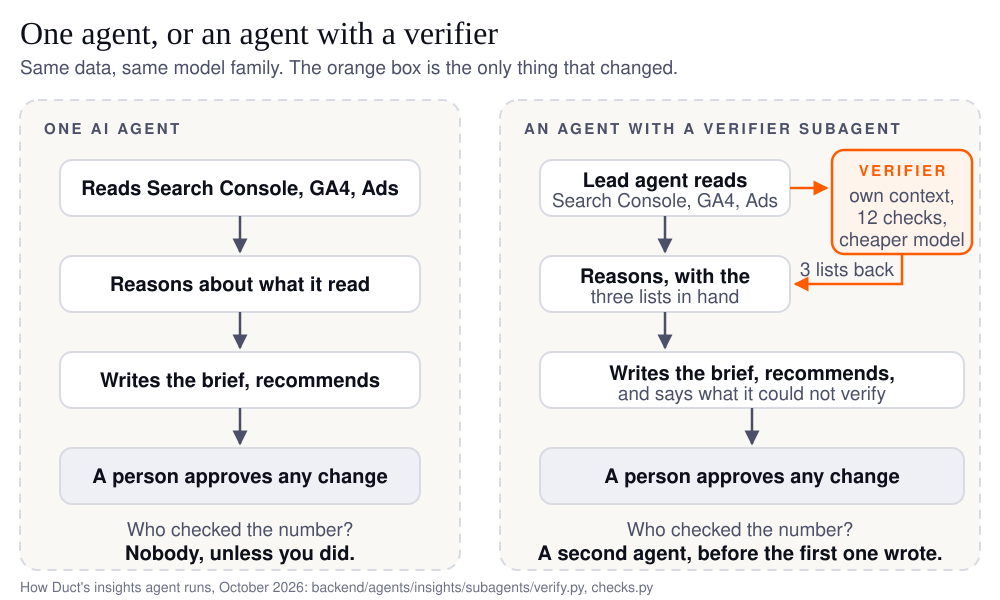

An AI agent is one program that uses a language model to do a bounded job with tools: read your Google Ads, write the weekly report, propose a bid change. Agentic AI is a system of several such agents, where one plans, others do the parts, and one checks the result. Most marketing jobs need the first. A few need the check, and those are the ones where a wrong number costs money.
On October 25 I found out that Duct had been agentic in a way I had not intended. The insights agent, the one that reads a team's Search Console, GA4 and ad accounts together and writes the brief, hands its data checks to a smaller helper agent. The framework it runs on (deepagents, LangChain's agent harness) also mounts a second helper by default, named general-purpose, and that default gives the helper every tool its parent has. So for eight weeks Duct's helper could propose changes to live ad accounts, roll them back and write to memory, with none of the run limits its parent works under.
Nothing bad happened, because the helper was never asked to do any of that, and because no agent in Duct can apply a change anyway: that needs a person pressing a button. But "nothing happened" is luck, not design. The fix was a 68-line file and a test, test_agent_assembly.py, that fails if any helper ever carries a writing tool again.
I am starting with that story because it is the whole difference between the two terms in one incident. One agent is a thing you can read. Several agents are a thing you have to govern, and the second one you did not know you had is the one that bites.
What is the difference between an AI agent and agentic AI?
An AI agent is one model-driven program doing one job. Agentic AI is the arrangement of several, with a plan, a shared memory and a check. The paper people search for by name, Sapkota, Roumeliotis and Karkee's AI Agents vs. Agentic AI: A Conceptual Taxonomy, Applications and Challenges (Information Fusion, 2025), describes AI agents as "modular systems driven and enabled by LLMs and LIMs for task-specific automation" (LIMs are large image models, the picture-reading cousins of language models), and agentic AI as "a paradigm shift marked by multi-agent collaboration, dynamic task decomposition, persistent memory" and "coordinated autonomy".
Workday's Sydney Scott puts the same split in plainer words: "AI agents are task-oriented software systems that carry out specific, predefined actions within a workflow", and "Where agentic AI determines the plan, AI agents are responsible for completing the steps that move a process forward."
Strip the vocabulary and you get a table a marketer can use:
| One AI agent | An agentic system | |
|---|---|---|
| How many | one loop, one context window | several agents, each with its own context window |
| Who plans | the agent, inside its one conversation | a lead agent breaks the job into parts and hands them out |
| Who checks | nobody, unless you do | a separate agent whose only job is to find what is wrong |
| How it fails | confidently: a wrong number carried straight into the recommendation | expensively: more model calls, and a detail lost in the handover between agents |
| Cost per run | the cheapest it gets | Anthropic measured about 15 times the tokens of a chat |
| A marketing job that fits | "what was my ROAS last week, by campaign" | "why did signups drop, and can I trust the numbers that say so" |
The row that matters is "who checks". Everything else is plumbing.
Is agentic AI just a buzzword?
As a label, mostly yes. As a question, no. Descope's take, in AI Agents vs. Agentic AI: Is There Really a Difference?, is that for most practitioners "these differences are more semantic than substantive", and the autocomplete data agrees with the confusion: the top phrasings around this query are the paper's title, "reddit", "examples" and "vs generative ai", which is what people type when a word is everywhere and nobody will define it. "Agentic" is doing for software what "artisanal" did for bread: same loaf, new price.
The useful question hides inside the label. When a vendor says agentic, ask who checks the work. A product with one model reading your data and writing a recommendation is one agent, whatever the adjective. A product where a second agent reads the same data looking for what is wrong with it, before the first one recommends anything, is doing the one thing the word was supposed to mean. If you cannot find that second agent in the demo, it is not there.
When does a marketing job need more than one agent?
When the job is wide, or when being wrong is expensive. Otherwise one agent, and often no agent at all. Anthropic's Building effective agents is the clearest guide I know on this, and its advice is to find "the simplest solution possible, and only increasing complexity when needed", because agent systems "often trade latency and cost for better task performance". Add a second agent "only when it demonstrably improves outcomes".
They then measured what "demonstrably" looks like. In How we built our multi-agent research system, a lead agent with parallel helpers "outperformed single-agent Claude Opus 4 by 90.2% on our internal research eval". It also used "about 15× more tokens than chats", and "token usage by itself explains 80% of the variance": the second agent helps mostly by reading more. Their conclusion is a budget rule, not a technology rule: "multi-agent systems require tasks where the value of the task is high enough".
For a growth team, that sorts the week's jobs quickly:
- One agent, or none: the Monday read of one dashboard, a CTR by campaign, a draft of next week's post. One read, one answer. A good calculator does some of these without a model at all.
- One agent with a checker: anything that ends in "so we should move budget". The read is cheap; the recommendation is not, and the number under it deserves a second pair of eyes.
- Several agents in parallel: a competitor sweep across thirty sites, a keyword gap across every page you rank for. Wide jobs, where the gain is reading more than one context window can hold.
If you want the one-agent case drawn out step by step, the agentic workflow guide walks a weekly brief through it. The line between an agent and plain automation is in AI agent vs chatbot vs automation.
What is a subagent, and why does Duct run two?
A subagent is a second agent the first one can hand a bounded job to, which does that job in its own context window and reports back. Duct's insights agent runs two: a verifier, and the read-only general-purpose helper from the story above.

The verifier landed on August 31, and the commit that added it gives the two reasons it is a separate agent rather than a step in the main loop. The first is room: running twelve checks means fetching several entities and reasoning about each, and doing that inline "would fill the analyst's window with check plumbing before it wrote a word of the actual answer". The second is posture: the analyst is looking for what matters, the verifier for what is wrong with the data, "an adversarial posture that reads badly when mixed into the same turn". LangChain's Thushanth Bengre and Chester Curme make the same case in Organizing Context in a Multi-Agent Harness: "Subagents provide context isolation", and for a checker specifically, "inheriting the supervisor's reasoning can be counterproductive". You do not want the auditor to have read the pitch.
What the verifier checks is a library of twelve questions in five families, each one there because the naive reading produced a believable wrong number in a real account: is tracking still recording anything (liveness), is this real traffic or your own team (contamination), are the ad platform's conversions and the analytics' conversions the same unit (units), where in the funnel is the ask (funnel), and did the money actually settle (money). The analyst's prompt tells it to delegate before any recommendation, and the verifier comes back with three lists: what it verified, what it found wrong, and what it could not check at all. That third list is half the value. "I could not check whether your conversions include internal traffic" is a sentence a dashboard cannot say.
Two honest limits. Nine of the twelve checks run today; the three money checks are declared but wait on billing entities the verifier cannot fetch yet, so a brief will tell you it could not confirm revenue settled rather than pretend it did. And the verifier runs on Duct's Standard model tier while the analyst runs on Heavy (tiers.py), which is a cost decision I made on reasoning, not on a measurement. Which brings me to the question everyone should ask.
Does agentic make a product better, or only more expensive?
I cannot show you a number that says Duct's verifier made its briefs better. I can show you what it costs, and why I keep it anyway. The eval that gates changes to the agent records a baseline per model: on DeepSeek V4 Flash, a brief on the synthetic test account costs a median of $0.0052 and four model calls, with a 77.8% pass rate over 18 trials (baselines.json, recorded September 30). The verifier's calls are inside that number. So "agentic" costs cents here, not dollars, because the second agent runs on a cheaper tier and, since a change in October, reuses the analyst's data pulls instead of fetching them again.
What the eval does not yet do is run the same brief with the verifier switched off and compare. That is the measurement that would settle whether the second agent earns its place, and it is on the list. Until then, the honest statement is the one Anthropic's research team made about their own system: more agents help by reading more, and they are worth it only where the task is worth it. A weekly recommendation that moves ad spend is worth a $0.005 check. A number in a dashboard nobody acts on is not.
The real cost of agentic is not the model calls. It is governance. Every extra agent is another thing with tools, and my October 25 helper is what that looks like when nobody is counting. That is why the harness around the agents, not the agents themselves, is where I spend the time, and why every change still ends with a person approving it.
What should a marketer ask in a demo?
Six questions, in the order they save you money:
- How many agents are there, and what can each one do? Ask for the list of tools per agent. A vendor who cannot produce it has not read their own system.
- Who checks the numbers before the recommendation? If the answer is "the model is very accurate", there is no checker.
- What does it tell me it could not check? The good answer is a list. The bad answer is silence.
- Which actions need a person, and what enforces that? A rule in the prompt is a wish. A missing tool is a rule.
- What does one run cost, on my data? Ask for the number per brief, not per month.
- Can I read the code? You may never read it, but a vendor's answer to this question tells you how confident they are in the first five.
FAQ
Is ChatGPT agentic AI?
ChatGPT in a chat window is a generative model: it writes, it does not act. ChatGPT's agent mode, which browses and fills forms on your behalf, is an AI agent, one loop with tools. Neither is an agentic system in the paper's sense, which needs several agents with a plan and a check. The marketing version is the same ladder with your data plugged in.
What is the difference between generative AI, AI agents and agentic AI?
Generative AI produces text, images or code from a prompt and stops. An AI agent wraps a model in a loop with tools, so it can read your accounts and act toward a goal. Agentic AI is several agents arranged with a planner, shared memory and a checker. Each level adds autonomy, cost and things to govern.
Is an agentic workflow the same as agentic AI?
No. An agentic workflow is a process where steps are decided by a model as it goes, and it can be one agent. Agentic AI, in the usual meaning, is the multi-agent arrangement. A weekly brief written by one agent that fetches, compares and writes is an agentic workflow without being agentic AI.
Do I need agentic AI for my marketing?
Probably not as a product category. You need a check on any number that moves budget, and a person approving the move. Whether that check is a second agent, a rule in code or you reading the brief is an engineering choice. Buy the check, not the adjective.